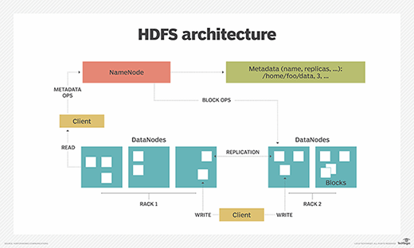
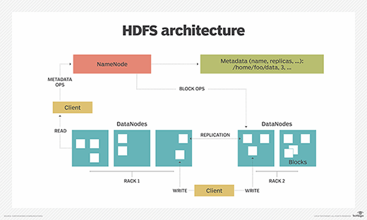

Big Data For Data Science
Module 2: Data storage for Big Data
Xingang (Ian) Fang
Outline
Overview of data storage for big data
File systems/Storage services for big Data
NoSQL databases for big data
Overview
What we care most
Traditional data storage vs Big data storage
Distributed filesystem
Object store
NoSQL
What we care most?
📈Scalability - Volume
💰Cost - Volume
🚀Performance - Velocity, Volume
💪Robustness - Veracity
🗄Data organization and structure - Variety
Traditional vs Big Data Storage
Traditional
File system: unstructured data as files in directories
Relational Database: structured data as records in database
Big Data
Distributed file system: data organized as files
Object store: data organized as objects
NoSQL Database: data organized as records, documents, nodes, etc.
File systems/Storage services for big Data
Distributed file system
Hadoop Distributed File System (HDFS)
Commercial Cloud Storage Services
Amazon Simple Storage Service (S3)
Microsoft Azure Data Lake Storage (ADLS)
Google Cloud Storage Service
Hadoop Distributed File System (HDFS)
Hadoop Distributed File System (HDFS)
HDFS architecture and components
NameNode, DataNode
HDFS data organization
blocks
replication
rack awareness
HDFS operations
reading
writing
appending
deleting
 

Amazon Simple Storage Service (S3)
Amazon S3
S3 storage classes (standard, infrequent access, glacier, etc.)
S3 data organization (buckets, objects, keys)
S3 operations (uploading, downloading, copying, deleting)

Microsoft Azure Data Lake Storage (ADLS)
Azure Data Lake Storage (ADLS)
Overview of ADLS storage tiers (hot, cool, archive)
ADLS data organization (file system, directories, files)
ADLS operations (creating, reading, updating, deleting)
Google Cloud Storage Service
Google Cloud Storage
Google Cloud Storage classes (multi-regional, regional, nearline, coldline)
Google Cloud Storage data organization (buckets, objects, keys)
Google Cloud Storage operations (uploading, downloading, copying, deleting)